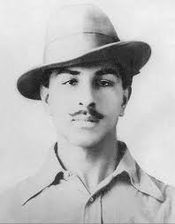

Bhagat Singh
Bhagat Singh was a prominent Indian freedom fighter and revolutionary who played a crucial role in the fight against British colonialism. Born on September 28, 1907, he is remembered for his acts of defiance, patriotism, and sacrifice during the Indian independence movement.
He actively participated in various revolutionary activities such as the Central Legislative Assembly bombing in 1929 and the Lahore Conspiracy Case. Bhagat Singh's martyrdom on March 23, 1931, continues to inspire and ignite the spirit of nationalism among the youth and future generations.
Key Achievements
- Participated in the Saunders' Murder case as a retaliation against police brutality.
- Founded the Hindustan Socialist Republican Association (HSRA) to fight against British oppression.
- Propagated the idea of complete independence and established a strong sense of nationalism.
- Wrote inspiring articles and pamphlets in newspapers like "Kirti" and "Veerta".
Legacy and Impact
Bhagat Singh's bravery, intellect, and fearlessness left an indelible mark in the history of India's struggle for independence. He is considered a national hero and an icon of resistance against tyranny.
- His sacrifice inspired many other revolutionaries to join the fight for independence.
- Bhagat Singh's writings continue to inspire the youth towards nationalism and social justice.
- He remains a symbol of courage, integrity, and dedication to the ideals of freedom.